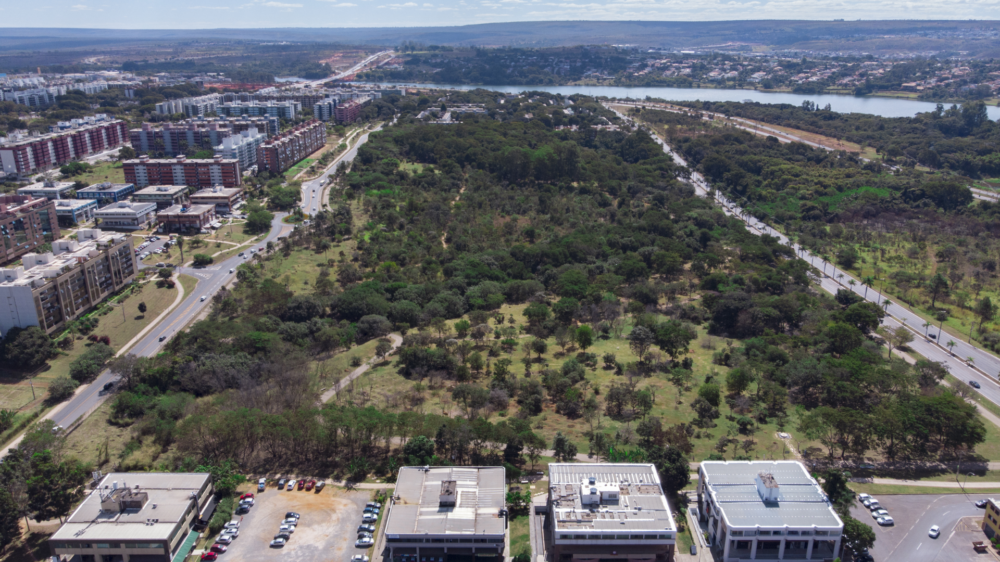
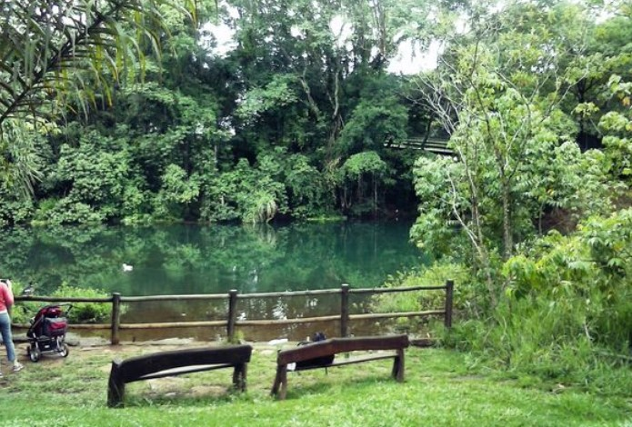
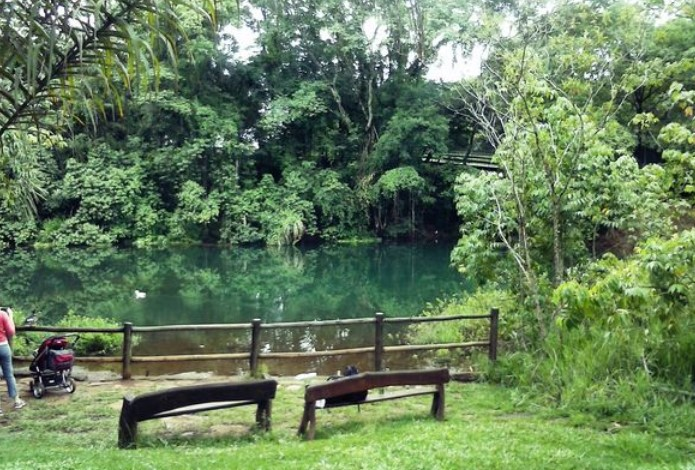
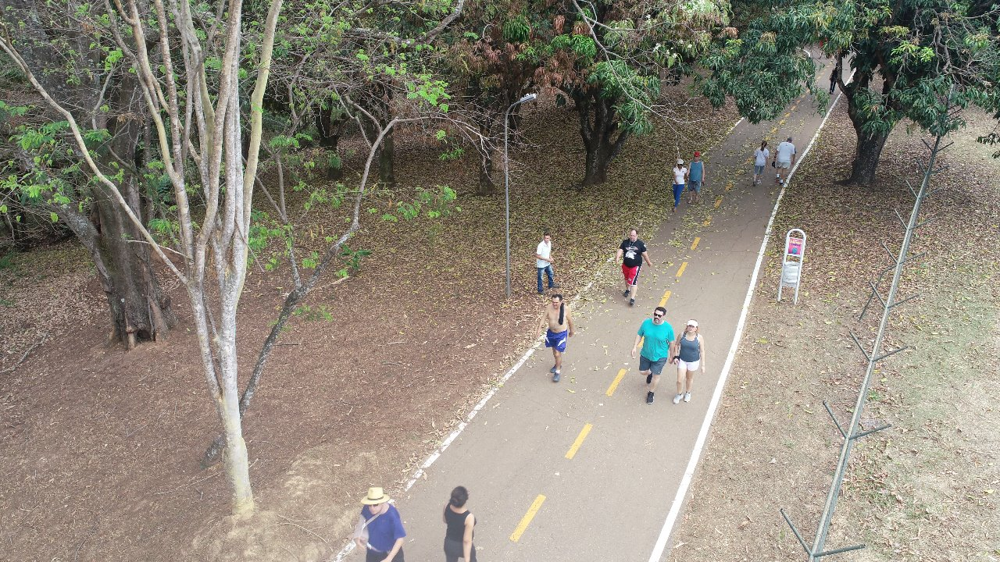
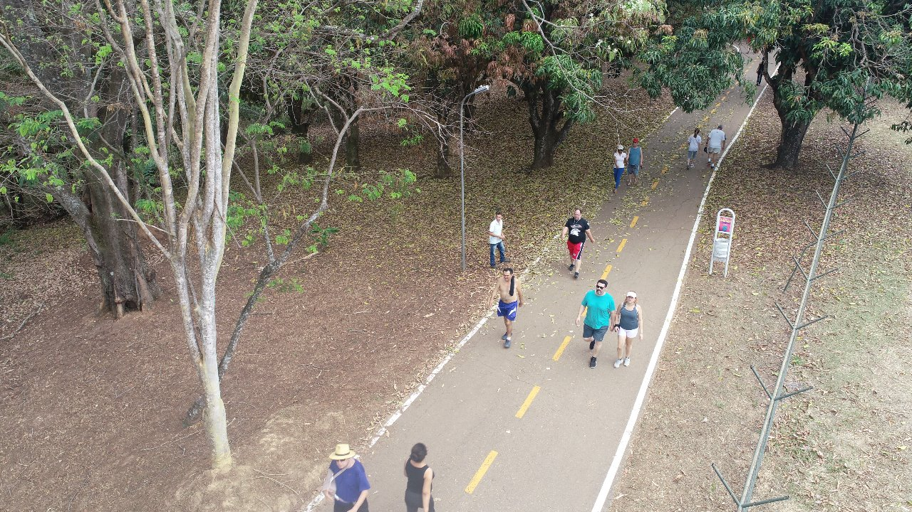

Parque Ecológico Olhos d'Água

Sobre o Parque
O Parque Olhos D'Água é um lugar público para lazer e atividades ao ar livre localizado na Asa Norte, em Brasília, no Distrito Federal. É um parque ecológico, o que significa que ele foi criado para preservar a natureza e oferecer um espaço agradável para as pessoas aproveitarem a área verde e a paisagem.
O Parque Olhos D'Água foi criado em 1994 e tem uma área de 28 hectares. É um dos lugares mais visitados da região. No parque, você pode participar de muitos eventos culturais e fazer atividades físicas. Ele preserva a vegetação típica do cerrado e tem um pequeno lago. O parque é administrado pelo governo do Distrito Federal (GDF).
Um pouco mais da
história do parque...
A unidade nasceu da iniciativa da comunidade local, que para chamar a atenção da sociedade e do governo para sua importância, fizeram diversas ações como passeatas pelo Eixão do Lazer e a construção, em 1993, de uma árvore de Natal feita com o lixo jogado no parque, pelo artista plástico Normando Rodrigues

A Lei nº 556 estabeleceu que o Parque Olhos D'Água tem vários objetivos. Entre eles estão: proteger as nascentes e o lago da SCLN 414/415; preservar e recuperar a vegetação ao redor do lago; proteger a bacia do Paranoá; promover programas de observação e pesquisa sobre o meio ambiente local; garantir que as pessoas possam aproveitar o parque sem prejudicar o meio ambiente; e desenvolver atividades de educação ambiental.
A área de lazer oferece várias atrações. Você pode usar as trilhas para caminhar, aproveitar o parque infantil, fazer exercícios no circuito específico, e usar os banheiros, bebedouros e chuveiros. Também há quiosques, pistas para corrida, e bancos e cadeiras para relaxar ao sol. Além disso, o parque tem lixeiras para coleta seletiva, ajudando na separação dos resíduos.
Estrutura

O parque é cercado em todo o seu redor e é supervisionado por policiais do Batalhão Florestal da Polícia Militar do Distrito Federal.
Fotos
 

 


BIODIVERSIDADE
FLORA
No parque, você encontra principalmente três tipos de vegetação: campo cerrado, mata mesofítica e mata de galeria. Entre as plantas mais comuns, estão as árvores como barbatimão, jacarandá-do-Cerrado, faveiro, pau-jacaré, angico e embaúba. No entanto, em 2004, foi observado que, devido a atividades humanas, também surgiram algumas espécies de capim, como capim braquiária, capim-elefante e capim-gordura.


Exemplar de cipó prata (Banisteriopsis oxyclada) encontrado no parque, em 2010
Cipó amarelo (Cuscuta racemosa) fotografado no parque, em 2012

FAUNA
Um mico-estrela (Callithrix penicillata) em uma árvore do parque, em 2015
Você pode ver diversas aves, répteis, anfíbios e peixes no parque. Muitos desses animais ajudam a espalhar sementes e controlar a quantidade de insetos. Como o parque está perto do lago Paranoá e tem uma área de Mata Mesofítica preservada, há muitas aves por lá. Também existem alguns animais domésticos abandonados, como coelhos, jabutis e tartarugas. A razão para não haver muitas espécies no parque é que ele está isolado de outras áreas de cerrado, então não há migração de animais de outros lugares, o que poderia aumentar a variedade de espécies.
ATIVIDADES
PARA LAZER
Além de suas visitas diárias, o Parque Olhos D'água recebe muitas atividades diversificadas, incluindo eventos culturais, aulas de yoga, tai chi chuan e meditação, bem como feiras de trocas de sementes.
Em 2010, foi constituído o projeto Vô, Vó Malhar é no Parque, com o intuito de levar idosos a frequentar a Academia da Terceira Idade (ATI), construída nas dependências do parque. Em 2012, os participantes do programa, que era gratuito, recebiam acompanhamento de educadores físicos.


Endereço: Quadra 413 e 414 - Asa Norte, Brasília - DF, 70876-000
Horário de funcionamento:
05:30h - 21:00h
Todos os dias